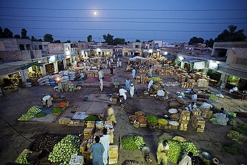

About Local Farmers
Our tribute
Local farmers are the backbone of our food system. They preserve soil, nurture livestock, and provide seasonal produce that nourishes communities. Many farms are family-run and have been working the land for generations.

Important milestones
- 1998 — Family farm established: Green Valley Farm
- 2005 — First certified organic program launched
- 2012 — Community Supported Agriculture (CSA) program started
- 2018 — Market reached 10,000 loyal customers annually
Contributions
- Supplying fresh seasonal produce
- Educational workshops on sustainable farming
- Supporting local food banks and community kitchens
Learn more about farmers' markets:
Wikipedia |
FAO
Learn more